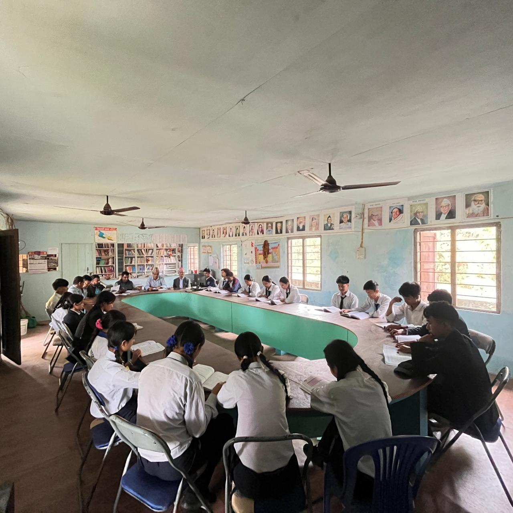
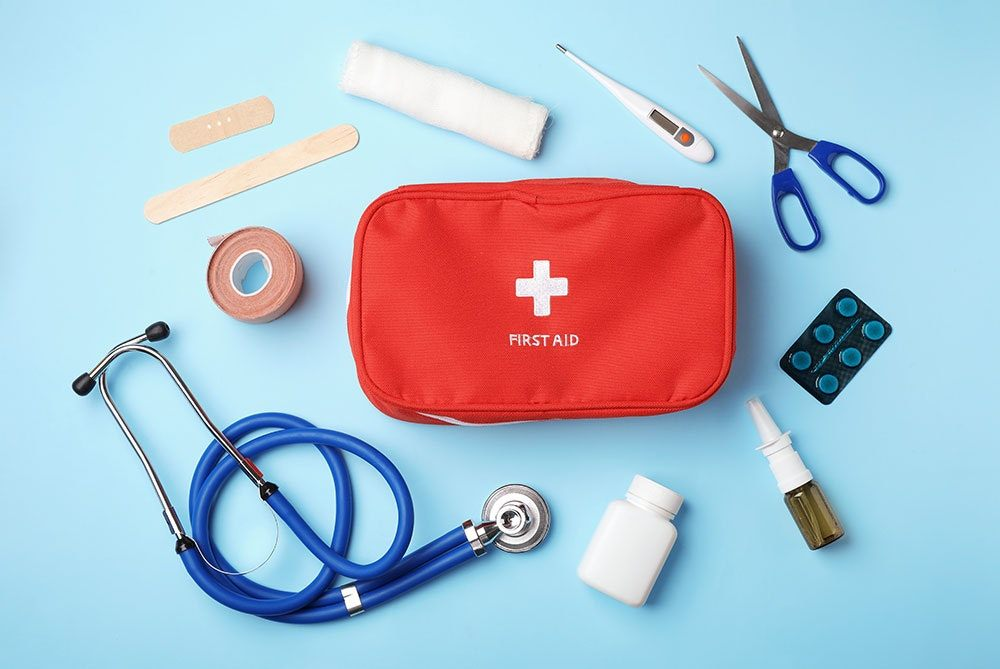
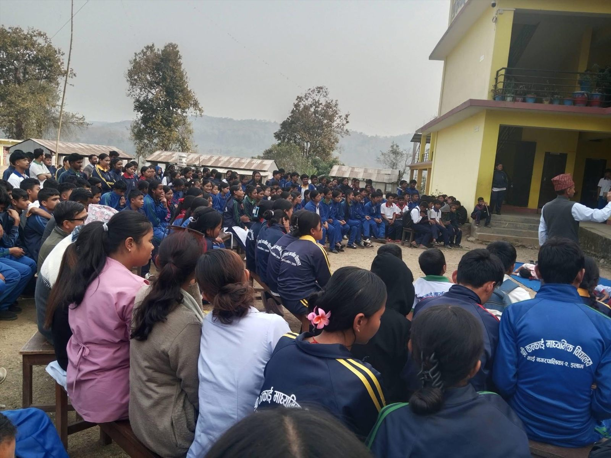

Cafeteria
Our cafeteria provides clean and student-friendly meals with attention to hygiene, nutrition, and comfort during school hours.
- Safe and clean serving area
- Healthy snacks and drinks
- Supervised student seating
School Facilities
Our facilities support balanced development through academics, practical labs, healthy food, sports culture, and co-curricular opportunities.
Our cafeteria provides clean and student-friendly meals with attention to hygiene, nutrition, and comfort during school hours.

The school library supports reading habits, research skills, and independent learning through curriculum books and reference materials.

Our practical labs are designed to connect theory with real skills. Students gain hands-on experience through guided experiments and project-based activities.

Our school maintains a ready first-aid station to respond quickly to minor injuries and student health needs during school hours.
We promote physical fitness, teamwork, and discipline through regular games, sports practice, and inter-house competitions.

ECA programs help students build confidence, leadership, creativity, and communication beyond the classroom.